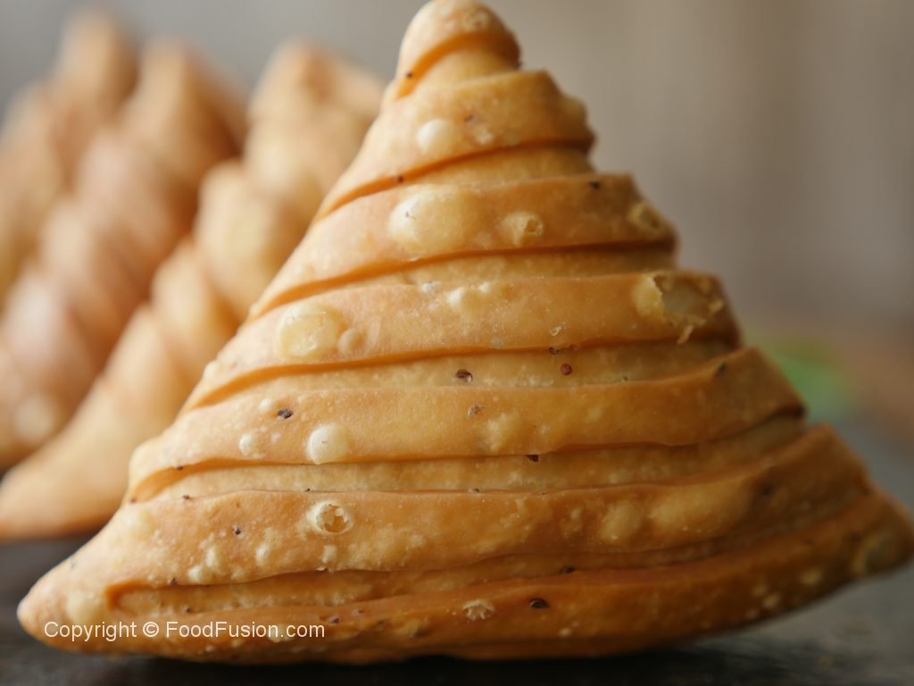

Hello Jasmine! I recently discovered an issue as polarising as marmite- the humble samosa.
Turns out many are strongly against messing with the formula (if it ain't broke and all that)
With the deepest respect for the sanctity of samosas, and for the incurably curious, for your consideration, I give you APPLE SAMOSA!!!
Heat oven to 200C/180C fan/gas 6. Place the apples, sugar, mixed spice and sultanas in a saucepan with 2 tbsp water and cook, covered, for 6 mins or until the apples are soft, stirring once or twice. Tip into a shallow dish and spread out to cool slightly.
Cut the sheets of filo in thirds lengthways, then brush lightly with the melted spread. Place a spoonful of the apple filling at the top of each strip,then fold over and over to form triangular parcels. Place on a baking sheet and bake for 15-20 mins until crisp and golden. Serve with low-fat yogurt, if you like.
Thank you for the amazing photo foodfusion.com
